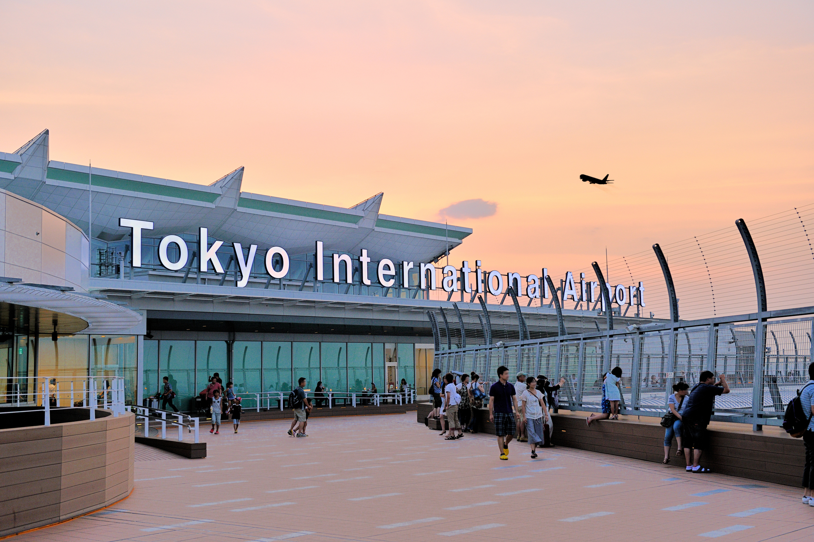

3. Haneda Airport

Tokyo International Airport, commonly known as Haneda Airport, Tokyo Haneda Airport, and Haneda International Airport, is one of two international airports serving the Greater Tokyo Area, the other one being Narita International Airport. Haneda Airport announced as the second-Best Airport in the World and World's Cleanest Airport.
In addition, Haneda airport has also been named the Best Airport in Asia, the World's Best Domestic Airport, and the Best Airport for passengers with Restricted Mobility and Accessible Facilities. Among all the airports in the world, Haneda Airport is announced as the second-best Airport in the World and World's cleanest Airport.